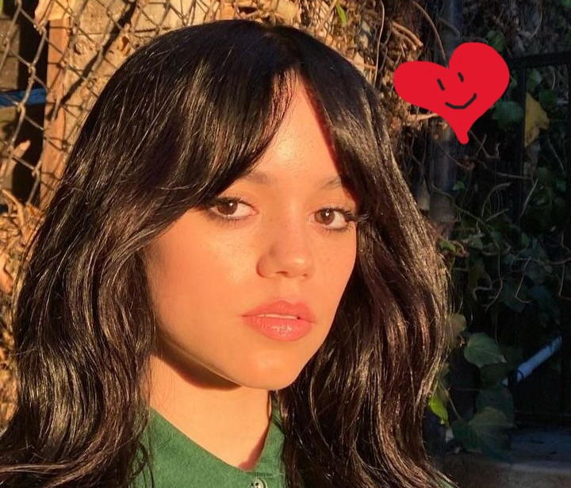

Sumário
- Biografia
- Carreira
- Filmografia
- Fontes
Biografia
Jenna nasceu em 27 de setembro de 2002 no Estado da Califórnia, a quarta de seis filhos.
O pai de Ortega é empresário e sua mãe é chefe enfermeira,
jenna também têm descendência mexicana.
Carreira
Jenna iniciou sua carreira como atriz mirim em 2014 interpretando uma personagem na série Jane the Virgin,
em 2016 na série Stuck in the Middle, que foi nessa série pela qual ganhou um Imagen Award, atuou também na
2° Temporada de You, em 2019, e também em Yes Day, em 2021.
Filmografia
Foram vários filmes que teve a participação dela em algum papel, que no total foram 13 filmes, de 2013 até 2023.
Uma listinha dos filmes onde ela ja participou.
- Iron Man 3
- Insidious: Chapter 2
- The Little Rascals Sava the Day
- After Words
- Saying Flora
- Wyrm
- The Babysitter: Killer Queen
- Yes Day
- The Fallout
- Scream
- Studio 666
- X
- American Carnage
- Scream VI
- Finestkind
- Miller´s Girl
- Winter, Spring, Summer, or Fall
Fontes
As informações utilizadas nesse site vieram da Wikipédia.
